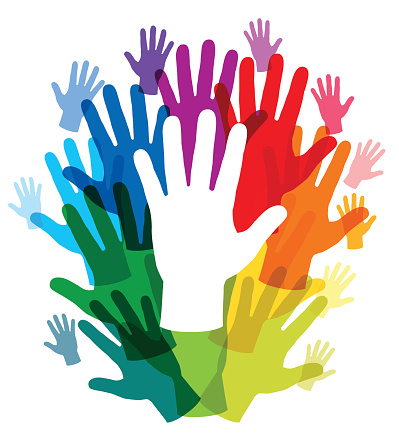

Me chamo Michelly Alves da Silva, meu primeiro contato com a Língua de Sinais Brasileira (Libras) foi ainda na infância em que na vizinhança tinha um garoto chamado Fernando (atualmente conhecido como Macarrão-integrante da Banda Surdodum), brincávamos na nossa rua, e, enquanto isso, para comunicar ensinava os sinais. Depois, aos 22 anos quando mudei de Igreja, nesta Instituição havia um Ministério de Sinais em que havia uma média de 15 a 10 Surdos, me interessei em opter conhecimento para ministrar a palavra e as músicas, então, me inscrevi e fui sorteada para cursar Libras no IFB campus Taguatinga e com o professor João Paulo Vitório;
Situada no Setor QNH 1/3 area especial 2, Taguatinga Norte; Foi criada no ano de 2013. É a primeira escola inaugurada no DF da rede pública de ensino. As línguas ministradas são: a Libras e o Português na modalidade escrita, a metodologia aplicada é a visual. Seu público alvo alunos com surdez de leve a profunda, com implante coclear ou não-oralizados.
Localizada no endereço SGAS 912 Sul (módulos 43-48) Asa Sul, ela consegue atender até 147 estudantes, oferece ensino integral nos niveis de ensino infantil, ensino fundamental e ensino médio e o Programa de Educação Precoce para bebes de 0 a 3 anos e 11meses, alinhado ao PNE levando o título como Instituição Bilíngue em que respeita as necessidade linguísticas dos alunos Surdos, docentes com fluência em Libras (aprovados em bancas de aptidão). Sua estrutura física possui 12 salas de aula equipada com ar-condicionado, refeitório, sanitários acessíveis, espaços administrativos e de serviços com intuito de trazer aos estudantes um ambiente acolhedor. Logo abaixo, teremos uma foto ou melhor uma imagem da fachada inicial da escola em tons de azul e cinza em formas geométrica especificamente triângulos em posições diferentes.

Desde o 1º período do ano de 2015, e teve a formação da primeira turma no segundo semestre de 2018, seu público-alvo focaliza em Surdos que pretende a formação superior.
A Banda Surdodum, fundada pelos músicos Ana Lúcia Soares, Reinaldo Braz e Chiquinho Batera, surgiu em Brasília-DF, em 1994. Com apoio de músicos ouvintes na voz, bateria, contrabaixo, guitarra e violão, o grupo foi pioneiro na inclusão.

Fundada no dia 04 de fevereiro de 2007, pela comissão constituída Deborah Dias de Souza, representante da ASB, Fernando Jacomini Felicio, representante da ADSB, Pedro Melo Soares de Morais, representante da ASSURP e Paulo Humberto Matos de Alencar, representante da ASSME. E no dia 04 de março tomou posse a primeira presidente fundadora Deborah Dias de Souza e pelo vice-presidente Pedro Melo de Soares Morais.
 A logo ou brasão acima com cores verde, azul e amarelo dão um significado voltado a arcos, e, subentende-se que busca trazer significados da capital Brasília;
Sua principal preocupação é a democratização do esporte e lazer, participação dos campeonatos brasileiros, regionais e internacionais e a implantação de projetos sociais que beneficiem principalmente as crianças e jovens do DF.
Você é surdoatleta e não tem a entidade para participar em eventos distritais, regionais, nacionais e/ou internacionais, basta nos procurar que indicaremos uma das nossas Entidades filiadas do Distrito Federal.
O lema ou intuito é Não desista! sua vontade de participar nos eventos esportivos de Surdos. site oficial https://fbdsdf.org.br/
Voltar ao menu
A logo ou brasão acima com cores verde, azul e amarelo dão um significado voltado a arcos, e, subentende-se que busca trazer significados da capital Brasília;
Sua principal preocupação é a democratização do esporte e lazer, participação dos campeonatos brasileiros, regionais e internacionais e a implantação de projetos sociais que beneficiem principalmente as crianças e jovens do DF.
Você é surdoatleta e não tem a entidade para participar em eventos distritais, regionais, nacionais e/ou internacionais, basta nos procurar que indicaremos uma das nossas Entidades filiadas do Distrito Federal.
O lema ou intuito é Não desista! sua vontade de participar nos eventos esportivos de Surdos. site oficial https://fbdsdf.org.br/
Voltar ao menu
Central de Intermediação em Libras (CIL) é promover o acesso das pessoas com deficiência aos serviços públicos com acessibilidade de comunicação em Libras. Orgão que presta serviços tais como, acompanhar cidadãos surdos em locais, exemplos, Instituições bancarias, hospitalares, de justiça como delegacias e fóruns. Voltado para a Inclusão em que seu principal objetivo dar autonomia a Comunidade Surda e Surdocega.

Teve sua fundação no dia 17 de junho de 1969, seu público alvo pessoas com deficiência auditiva em que atende crianças, adolescentes, jovens e adultos. Oferece Cursos de Libras (Básico ao Avançado);

Instituição beneficente, sem fins lucrativos, com mais de 50 anos de atuação no Distrito Federal (DF) localizada na Asa Norte, SGAN 909. Sua missão é oferecer atendimento especializado para Pessoas vinculadas ao SUAS (Sistema Único de Assistência Social), Usuários do SUS – Sistema Único de Saúde, Usuários do SUS – Sistema Único de Saúde, Bebês, crianças e jovens com deficiência auditiva,Bebês e crianças com deficiência intelectual e/ou autismo; Promovendo o diagnóstico precoce, reabilitação, apoio educacional e inclusão social.
